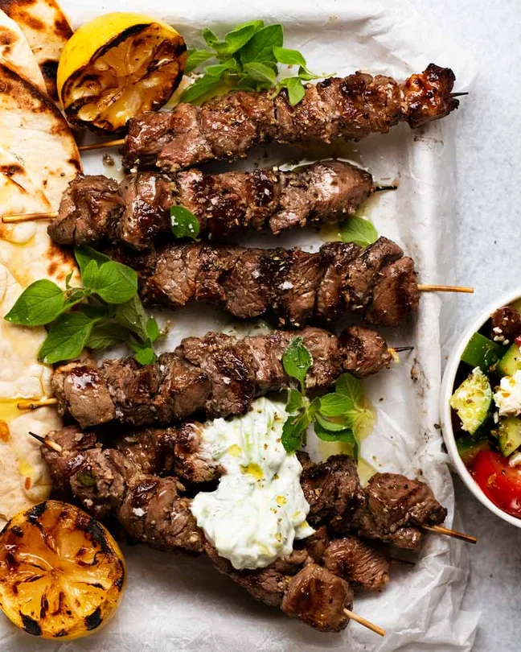

Lamb Souvlaki
Home

Souvlaki is essentially Greek fast food but to think of these being compared to McDonald’s is somewhat laughable because hello! Succulent pieces of tender lamb infused with bright lemon flavours, a stack of garlic, and earthy oregano, that smells so outrageously good as they cook you can’t help but grab one straight off the grill and eat it hot, straight off the stick…..
Ingredients
- Boneless lamb leg
- Lemon
- White wine vinegar
- Extra virgin olive oil
- Garlic and dried oreganoGarlic and dried oregano
- Bay leaves
- Salt
Steps
- Trim excess fat and cut the lamb into meaty 2.5cm / 1” cubes. I find the easiest way to do this is to cut into thick 2.5cm / 1” slices, trim the fat off, then cut into cubes.
- Marinate – Mix the marinade in a bowl then mix in the lamb. Refrigerate for at least 12 hours, up to 24 hours. You will notice the lamb becomes a little white on the surface which is due to the acid in the lemon and vinegar beginning to “cook” the lamb at the 24 hour mark. This is tenderising in action!
- Thread onto skewers. I usually make 12 skewers with 3 to 4 pieces on each.
- Cook for 3 minutes, turn then cook the other side for 3 minutes (ie just cook 2 sides, not 4 sides). This can be done either in a pan on the stove or on a medium high BBQ (I demo both in the video).
- Pile onto a platter with serving fixings of choice – to make wraps, eat hot straight off the sticks or to make plates! See next section below for ideas.